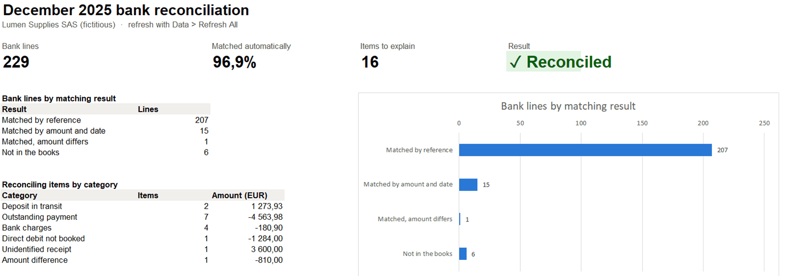
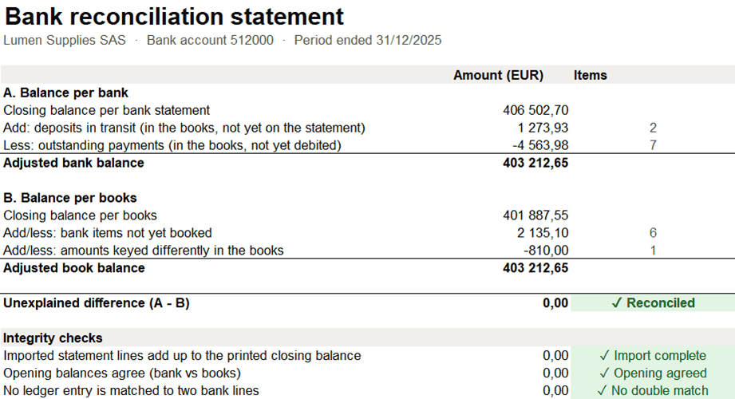

Automated bank reconciliation: from 229 lines to tick to 16 decisions
Every month, finance teams tick bank lines against the ledger by hand. I built a reusable Excel tool, with Power Query and formulas and no macros, that does the matching, produces the reconciliation statement with integrity checks, and lists only the items that need a human decision.
A monthly chore that delays the close
Before the monthly accounts can be closed, someone has to prove that the cash in the books matches the cash at the bank. In many companies this means printing the statement and ticking hundreds of lines against the ledger. It takes hours, it depends on one person, and the items that actually matter (a payment for the wrong amount, a direct debit nobody booked) are easy to miss in the noise.
Goal: a tool that a finance team can reuse every month without a developer: drop in the new files, refresh, and spend time only on the items that need a decision.
Two files that do not speak the same language
The ledger extract comes from the same fictitious company as the journal entry testing project: the 232 December lines of bank account 512000. The bank export is what a French bank actually sends: semicolon separators, comma decimals, dd/mm/yyyy dates, and cryptic labels where the ERP reference is sometimes cut off.
Date opération;Date valeur;Libellé;Débit;Crédit
01/12/2025;02/12/2025;VIR SEPA RECU /DE C001 /REF RCP-2501091;;4740,17
03/12/2025;03/12/2025;VIR SEPA EMIS /A S027 /REF PMT-S027-69720;2908,79;
03/12/2025;04/12/2025;VIR SEPA RECU /DE C021;;2855,74 ← no reference
10/12/2025;10/12/2025;PRLV SEPA ASSURANCE MULTIRISQUE PRO /CONTRAT 2026-ANNUEL;1284,00;On top of the normal flow, the statement contains the usual reconciling items, planted on purpose so the result can be checked: bank charges and a direct debit nobody booked, an unidentified customer transfer, payments not yet debited at year end, receipts not yet credited, and one payment for the wrong amount.
Import, match, reconcile, classify
Everything happens inside the workbook, so the finance team owns it. The formulas only use functions available since Excel 2016: many companies do not run Microsoft 365, and a tool that needs it would not be used.
- ImportPower Query reads both files, fixes French formats and extracts the reference from the label.
- Match by referenceINDEX/MATCH finds the ledger entry with the same reference.
- Match by amountLines without a reference: same amount within ±5 days, among unmatched entries.
- ReconcileThe statement, plus checks that the import is complete and nothing is matched twice.
- ClassifyKeyword rules turn each leftover into a category and a proposed action.

Reconciled to the cent, 16 items to look at
The reference rule matches 207 lines and the amount-and-date rule catches 15 more whose label had lost its reference. One line matches on reference but not on amount, and six bank lines have no counterpart in the books. Nine ledger lines are still waiting for the bank: normal at year end.
Bank lines by matching result
229 lines from the December statement

Reading the statement
The bank closing balance, adjusted for timing items (deposits in transit, outstanding payments), must equal the book balance adjusted for what the books do not know yet (bank charges, direct debits, transfers) and for keying errors. Both sides land on €403,212.65.
The three checks guard the tool itself: if a line is lost during the import, if the opening balances disagree, or if one ledger entry is matched twice, the sheet turns red.

What the finance team should do
Sixteen items, but only four decisions. The rest is timing and resolves itself in January.
Process impact: the monthly reconciliation becomes a refresh plus a review of 16 items instead of ticking 229 lines. The checks make it safe to hand over to another team member, and the 15 lines whose label lost its reference point to a quick win: ask the bank to keep the ERP reference in transfer labels.
The pieces that do the work
No macros, so no security warnings and nothing IT has to approve: Power Query for the import, formulas for the logic.
The bank query: the folder and file name come from the Settings sheet, French formats are typed with the fr-FR culture, and the ERP reference is pulled out of the label.
let
Folder = Excel.CurrentWorkbook(){[Name="DataFolder"]}[Content]{0}[Column1],
FileName = Excel.CurrentWorkbook(){[Name="BankFile"]}[Content]{0}[Column1],
Source = Csv.Document(File.Contents(Folder & FileName), [Delimiter = ";", Encoding = 65001]),
Promoted = Table.PromoteHeaders(Source, [PromoteAllScalars = true]),
Renamed = Table.RenameColumns(Promoted, List.Zip({Table.ColumnNames(Promoted),
{"Date", "ValueDate", "Label", "Debit", "Credit"}})),
BlanksToNull = Table.ReplaceValue(Renamed, "", null, Replacer.ReplaceValue, {"Debit", "Credit"}),
Typed = Table.TransformColumnTypes(BlanksToNull, {{"Date", type date}, {"ValueDate", type date},
{"Debit", type number}, {"Credit", type number}}, "fr-FR"),
WithAmount = Table.AddColumn(Typed, "Amount", each (if [Credit] = null then 0 else [Credit])
- (if [Debit] = null then 0 else [Debit]), type number),
WithReference = Table.AddColumn(WithAmount, "Reference", each
if Text.Contains([Label], "/REF ") then Text.Trim(Text.AfterDelimiter([Label], "/REF ")) else "", type text)
in
WithReferenceFor a bank line without a reference: the first ledger entry with the same amount, within the date tolerance, that was not already matched by reference. INDEX(...,0) lets MATCH test three conditions at once without an array formula.
=IF([@RefEntry]<>"", "",
IFERROR(INDEX(tblLedger[Entry],
MATCH(1, INDEX((tblLedger[Amount]=[@Amount])
*(tblLedger[MatchedByRef]=FALSE)
*(ABS(tblLedger[Date]-[@Date])<=DateTolerance), 0), 0)),
""))Each unmatched bank line gets the action of the first keyword found in its label. The rules live in a table: teaching the workbook a new case means adding a row, not editing a formula.
=IF([@Status]="Matched", "",
IF([@Status]="Amount difference", "Check the invoice: the bank and the ledger show different amounts",
IFERROR(INDEX(tblRules[Action],
MATCH(TRUE, INDEX(ISNUMBER(SEARCH(tblRules[Keyword],[@Label])), 0), 0)),
"Investigate with the bank")))The statement is a handful of SUMIFS on the two tables, plus checks that protect the tool against a silent import problem.
Deposits in transit =SUMIFS(tblLedger[Amount], tblLedger[Status], "Deposit in transit")
Outstanding payments =SUMIFS(tblLedger[Amount], tblLedger[Status], "Outstanding payment")
Bank items not booked =SUMIFS(tblBank[Amount], tblBank[Status], "Not in books")
Keying differences =SUMIFS(tblBank[Difference], tblBank[Status], "Amount difference")
Import complete? =ROUND(OpeningBank + SUM(tblBank[Amount]) - StatementClosing, 2)
Matched twice? =SUMPRODUCT((tblBank[MatchedEntry]<>"")*(COUNTIF(tblBank[MatchedEntry],tblBank[MatchedEntry])>1))Making it part of the close
Try it yourself
Open the workbook, check the Settings sheet, then Data > Refresh All. The data files sit in the data folder next to it.
- GitHubBrowse every file of this project
- bank_reconciliation.xlsxThe tool (Excel 2016 or later)
- README.mdProject overview
- data/bank_statement_2025-12.csvThe bank export
- data/ledger_bank_2025-12.csvThe ledger extract
- src/build_workbook.pyBuilds and tests the workbook
- src/generate_bank_data.pyBuilds the bank statement